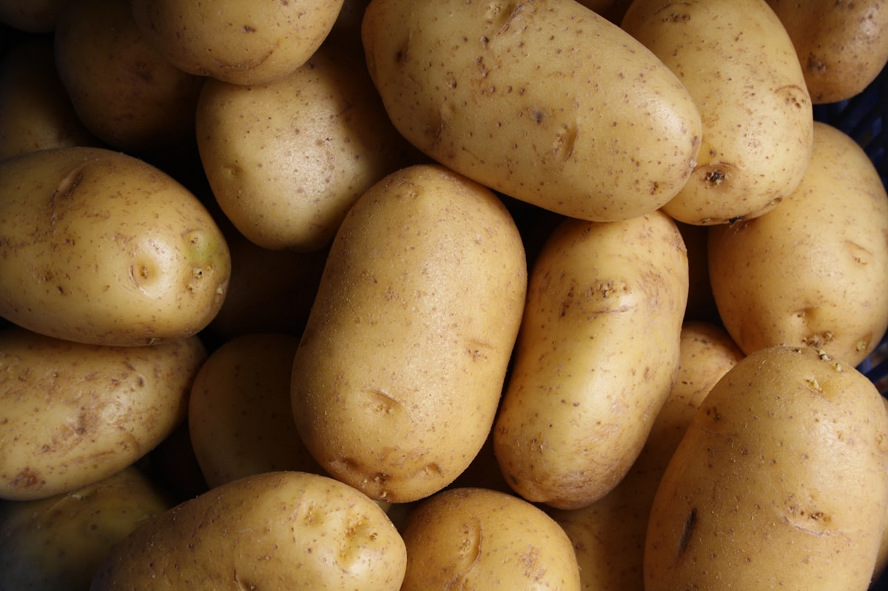
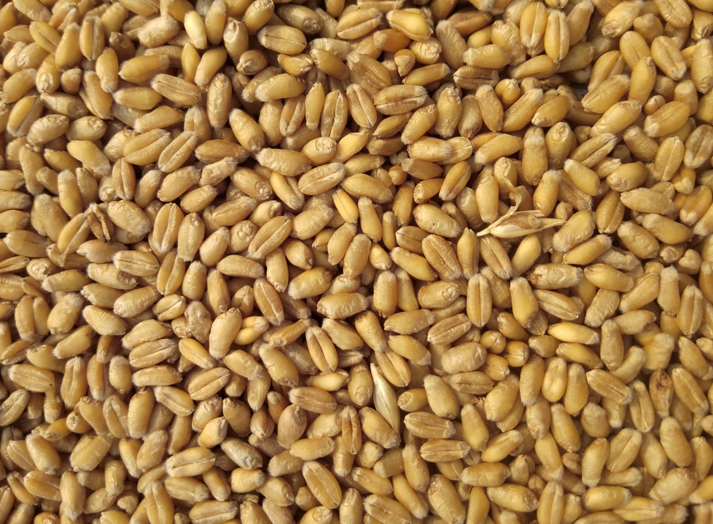
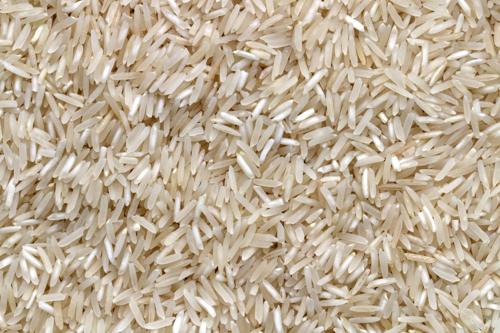

Best Seller

Classic 2D Discs
The industry-standard round pellet — reliable puff, neutral base flavor, takes seasoning evenly.
Moisture 11–13%MOQ 5t
Product Catalog
Every formulation below ships with a full spec sheet — moisture content, bulk density, expansion ratio and recommended fry parameters — so your production team can qualify it before the first container arrives.
01 · Potato-Based
Made from pure potato starch, our best-selling line. Available as classic 2D discs, 3D twists and shells, formulated for a light, crisp fry with minimal oil uptake.

The industry-standard round pellet — reliable puff, neutral base flavor, takes seasoning evenly.
High-expansion shapes for premium SKUs — larger bite, more surface area for coatings.
Lower-oil formulation qualified for oven and air-fryer production lines.
02 · Grain-Based
Whole-wheat and refined-flour blends for a lighter, more fibrous bite — popular for health-forward SKUs and private-label lines.

Visible bran flecking, higher fiber content on-label, formulated for a crunchy set.
Fine, uniform texture with a light color — carries delicate seasonings well.
Wheat base with added pulse protein — formulated to a customer-specified protein %.
03 · Corn-Based
High-expansion corn pellets for classic curl, ball and stick shapes — the workhorse of the extruded-snack category.
High-expansion curl shape, light and airy, standard for cheese-puff style snacks.
Dense, even ball shape — takes a heavier seasoning coat without collapsing.
Uniform stick length for automated packing lines and consistent portion counts.
04 · Micro Pellets
Sub-5mm micro pellets and rice/corn blends built for co-extrusion fillings, cereal-style snacks and applications where standard pellet sizing is too large.

05 · Semi-Finished Chips
Beyond extruded pellets, we supply par-fried and blanched semi-finished potato slices — ready for your final fry, seasoning and pack.
Blanched, par-fried and frozen — a single final fry away from finished chips.
Wavy, straight, crinkle and shoestring cuts, produced to your target thickness.
Frozen bulk cartons for further processing, or retail-ready bags on request.